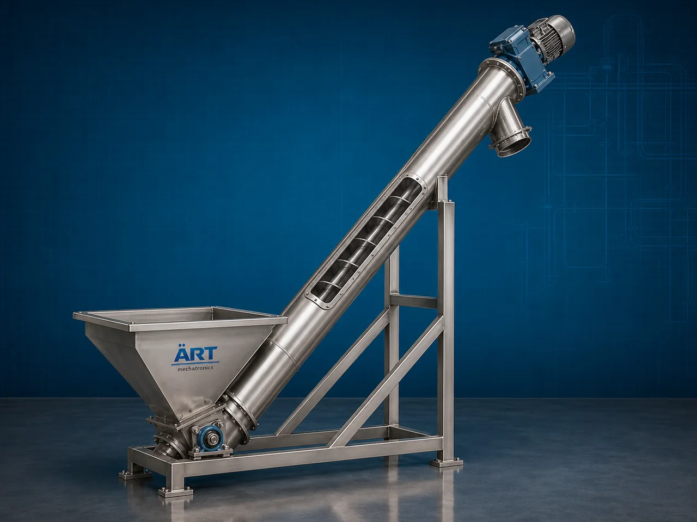

Inclined Screw Conveyor Machine (Industrial Inclined Auger & Bulk Material Conveying System)
An Inclined Screw Conveyor Machine, also known as an Industrial Inclined Screw Conveyor or Inclined Auger Conveyor System, is a highly efficient industrial material handling equipment designed for transporting powders, granules, grains, flour, semi-solid materials, chemicals, sludge, and bulk materials upward at an inclined angle using a rotating screw flight mechanism inside an enclosed conveyor body.

About the Inclined Screw Conveyor
Inclined screw conveyors are widely used for:
- Elevated material transfer
- Controlled feeding applications
- Dust-free conveying
- Bulk material handling
- Process automation
- Production line integration
The machine improves:
- Production efficiency
- Material transfer automation
- Factory space utilization
- Process continuity
- Labor reduction
The conveyor works using:
- Helical screw flights
- Rotating auger mechanism
- Motor-driven gearbox system
- Enclosed tubular or trough body
to move materials continuously and efficiently from lower to higher elevations.
Inclined screw conveyor machines are widely used in industries such as:
Food processing industries
Flour mills
Chemical industries
Cement industries
Pharmaceutical industries
Fertilizer plants
Grain processing plants
Plastic industries
Waste handling industries
where continuous inclined conveying and controlled material feeding are critical.
The machine is highly suitable for:
- Powder conveying
- Flour transfer
- Grain elevation
- Chemical handling
- Sludge transfer
- Bulk material feeding
ART Mechatronics offers high-performance inclined screw conveyor machines, engineered for continuous industrial operation, dust-free conveying, energy-efficient performance, and reliable long-term material handling.
Working Principle of Inclined Screw Conveyor Machine
Powders, grains, granules, sludge, or bulk materials are fed into conveyor inlet hopper
Electric motor rotates helical screw flight inside conveyor casing
Rotating auger pushes material upward along inclined conveyor body
Machine transports:
- Powders
- Flour
- Granules
- Chemicals
- Grains
- Semi-solid materials smoothly to higher elevations.
Screw pitch and conveyor angle optimized according to material characteristics
Enclosed conveyor body prevents: Dust leakage Product contamination Material spillage
Material discharged automatically at elevated destination point
Types of Inclined Screw Conveyor Machines
- 1. Tubular Inclined Screw Conveyor
Uses: ✔ Fully enclosed tubular body for hygienic and dust-free conveying.
- 2. Trough Type Inclined Screw Conveyor
Uses: ✔ Open trough structure for easier maintenance and inspection.
- 3. Food Grade Inclined Screw Conveyor
Designed for: ✔ Hygienic food and pharmaceutical industries
- 4. Vertical Inclined Screw Conveyor
Suitable for: ✔ High-angle and near-vertical material lifting applications
- 5. Heavy Duty Industrial Inclined Screw Conveyor
Suitable for:
- Cement
- Chemicals
- Large-scale industrial operations
- 6. Flexible Inclined Screw Conveyor
Uses: ✔ Flexible spiral screw system for adaptable industrial layouts.
Industries Using Inclined Screw Conveyor Machine
🍃 Food Processing Industry Powder and flour elevation systems 🌾 Flour Mill Industry Wheat and flour transfer applications ⚗️ Chemical Industry Chemical powder and granule conveying 💊 Pharmaceutical Industry Hygienic powder handling systems 🏗️ Cement Industry Cement and fly ash transfer systems 🌱 Fertilizer Industry Granule feeding and conveying ♻️ Waste Handling Industry Sludge and waste material elevation 🌾 Grain Processing Industry Grain feeding and inclined transfer systems
Features & Advantages
- Efficient inclined bulk material transportation
- Dust-free enclosed conveying system
- Continuous industrial operation
- Suitable for powders and granules
- Heavy-duty industrial construction
- Space-saving elevated conveying solution
- Low maintenance requirement
- Energy-efficient operation
- Easy integration with industrial processing systems
Technical Highlights
Conveyor Type: Tubular inclined conveyor Trough inclined conveyor Flexible auger conveyor Construction: Stainless Steel / Mild Steel Screw Design: Helical auger flights Drive System: Geared motor drive Variable frequency drive (VFD) Inclination: Adjustable inclined angle options Automation: Semi-automatic Fully automatic PLC-based systems
Turnkey Inclined Screw Conveying Solutions
ART Mechatronics offers: Complete inclined screw conveying systems Feeding and dosing integration Pneumatic conveying integration Material handling plant automation Installation & commissioning After-sales service & AMC
Why Choose Art Mechatronics
Expertise in industrial bulk material handling systems Customized conveyor solutions for multiple industries High-performance and durable machine construction Energy-efficient and reliable industrial designs Proven industrial performance across sectors
Applications
Food Processing Plants Flour Mills Chemical Industries Pharmaceutical Manufacturing Units Cement Plants Grain Processing Industries
Related Conveying & Handling machines
Get pricing & specs for the Inclined Screw Conveyor
Share the product, target capacity, current process and plant location. These details help our engineers discuss the right machine or line configuration.
One partner, from design to start-up
ART Mechatronics designs, manufactures, installs and commissions your Inclined Screw Conveyor solution with regional presence in India, UAE and Thailand.